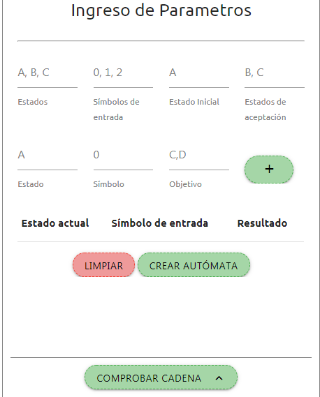
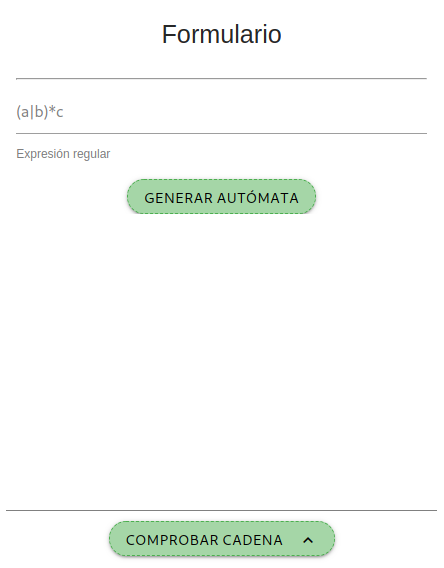
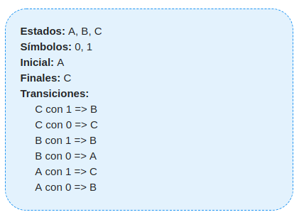
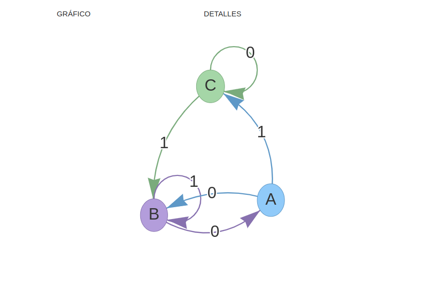
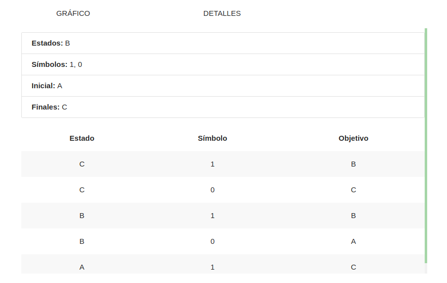
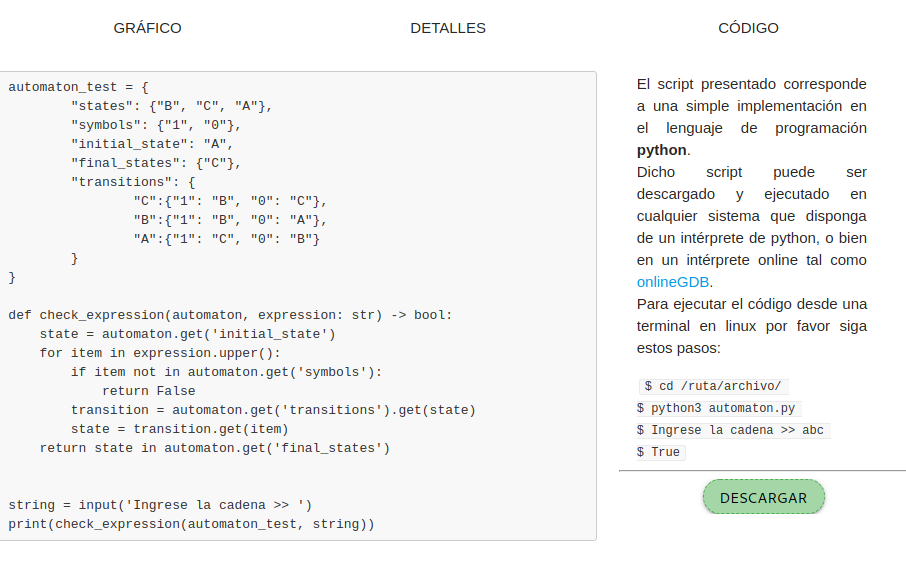
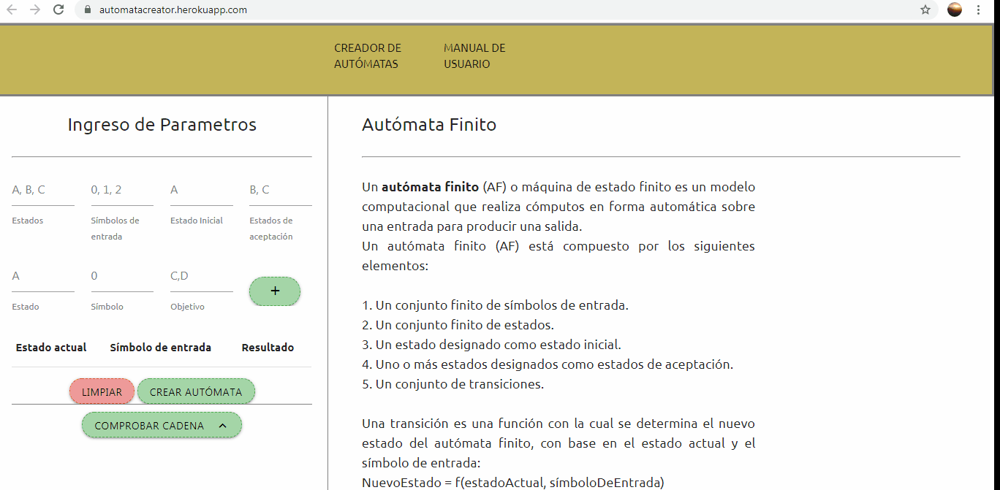
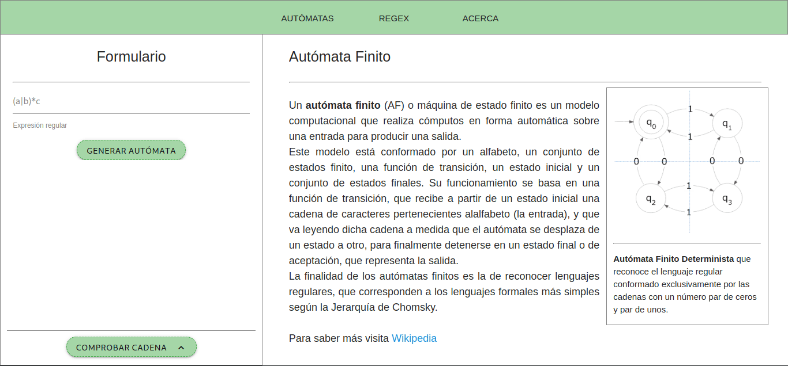

<div class="about-container">
    <div class="container">
        <h1>Automata Creator</h1>
        <hr>
        <p class="about-text">
            Es una aplicacion que facilita el uso  de las maquinas de estado o autómatas finitos 
            determinísticos <b>AFD</b> y los autómatas finitos no determinísticos <b>AFND</b>
            La creación se hace a partir de las transiciones que se tienen de un estado a otro
            según el simbolo de entada que se tenga haciendo uso de tablas.
        
            <br>

            Las operaciones que se pueden realizar son:

        </p>
        <ul class="about-text">
            <li>> Creación de autómatas finitos determinísticos AFD</li>
            <li>> Creación de autómatas finitos NO determinísticos</li>
            <li>> Evaluación de cadenas en autómatas finitos determinísticos AFD</li>
        </ul>

        <h2>Guía de usuario</h2>
        <hr>
        <p class="about-text">
            Automata Creator permite a el usuario crear, visualizar y comprobar autómatas finitos determinísticos 
            y no determinísticos. A continuación se presenta la pantalla principal de entrada de datos.
        </p>

        <div class="row">
            <div class="col s12 l6">
                <div class="user-options-container center-align">
                    
                    <hr>
                    <div class="user-options-description">
                        <h2 class="">Opciones de Autómata</h2>
                        <hr>
                        <p>
                            Contiene el formulario de creación de <b>AFD</b> y <b>AFND</b> y el formulario de
                            comprobación de hileras
                            de símbolos. <br> (Para <b>AFND</b> separar estados objetivo por coma).
                        </p>
                    </div>
                </div>
            </div>
            <!--<div class="col s12 l6">
                <div class="user-options-container center-align">
                    
                    <hr>
                    <div class="user-options-description">
                        <h2 class="">Opciones de Regex</h2>
                        <hr>
                        <p>
                            Contiene el formulario de generación de <b>AFD</b> a partir de expresiones regulares y el
                            formulario de comprobación de hileras de símbolos dada una <b>ER</b>
                        </p>
                    </div>
                </div>
            </div>-->
        </div>

        <div class="row">
            <div class="col s12 l7">
                <p class="about-text">
                    De manera similar presentamos el área de visualización de resultados, en la cual el usuario podrá
                    interactuar y analizar los resultados obtenidos después de crear un <b>AFD</b>, <b>AFND</b> o
                    de generar un <b>AFD</b> a partir de una <b>ER</b>. <br> De antemano es importante mencionar que el
                    área de resultados es compartida por las secciones Autómata y Regex, lo anterior se debe a que
                    los resultados obtenidos tras llevar a cabo una de las operaciones anteriores siempre será un
                    <b>AFD</b> mínimo y simplificado. <br>
                    Las siguientes imágenes corresponden a la información del autómata creado a partir de la
                    configuración mostrada en el <i>autómata A1</i>.
                </p>
            </div>
            <div class="col s12 l5">
                

                <p class="center-align"><i>Autómata A1</i></p>
            </div>
        </div>

        <div class="row">
            <div class="col s12 l9">
                
            </div>
            <div class="col s12 l3">
                <p><i>Figura 1</i></p>
                <hr>
                <p>
                    <i>Máquina de estados generada a partir del autómata A1.</i> <br><br>
                    En el diagrama anterior observamos un conjunto de estados y sus transiciones
                    dado un símbolo de entrada. El estado de color azul representa el estado inicial del autómata,
                    el estado(o los posibles estados) de color verde representan los estados de aceptación
                    del autómata. <b>Nota: </b> en caso de que un estado sea a su vez inicial y de aceptación el estado
                    será coloreado con un color azul oscuro.
                </p>
            </div>
        </div>

        <div class="row">
            <div class="col s12 l3 right-align">
                <p><i>Figura 2</i></p>
                <hr>
                <p>
                    <i>Información detallada del autómata A1.</i> <br><br>
                    En la sección detalles del área de visualización podemos encontrar la información de manera más
                    organizada para el automata generado, en esta sección podemos observar los estados, los símbolos,
                    el estado inicial, los estados finales (de aceptación) y las transiciones para cada uno de los
                    estados con cada uno de los posibles símbolos.
                </p>
            </div>
            <div class="col s12 l9">
                
            </div>
        </div>

        <div class="row">
            <div class="col s12 l9">
                
            </div>
            <div class="col s12 l3">
                <p><i>Figura 3</i></p>
                <hr>
                <p>
                    <i>Algoritmo obtenido a partir de la máquina de estados.</i> <br><br>
                    En el lado izquierdo de la sección código del área de visualización el usuario podrá encontrar
                    un script en el lenguaje de programación <b>python 3</b> el cual puede ser utilizado para evaluar
                    el <b>AFD</b> creado o generado; además, en el lado derecho encontrará instrucciones de cómo
                    ejecutar el script generado y un botón desde el cual se puede realizar la descarga del mismo.
                </p>
            </div>
        </div>

        <h2>Creando y evaluando AFD</h2>
        <hr>
        <p class="about-text">
            A continuación se muestra un vídeo en el cual el usuario podrá apreciar el proceso de
            creación y evaluación de un autómata. En primer lugar se mestran los pasos para crear un <b>AFND</b>,
            y se realiza una evaluación de una hilera de símbolos como en el primer caso.
        </p>

        
        <p class="center-align"><i>Video 1: Creación de <b>AFND</b></i></p>

        <br><br>

        <!--
        <p class="center-align"><i>Video 2: Generación de <b>AFND</b> apartir de <b>ER</b></i></p>
            -->
        <div class="footer center-align">
            <hr>
            <p class="flow-text">Universidad de Antioquia</p>
            <p class="year-text">2019 Medellín Colombia</p>
        </div>
    </div>
</div>